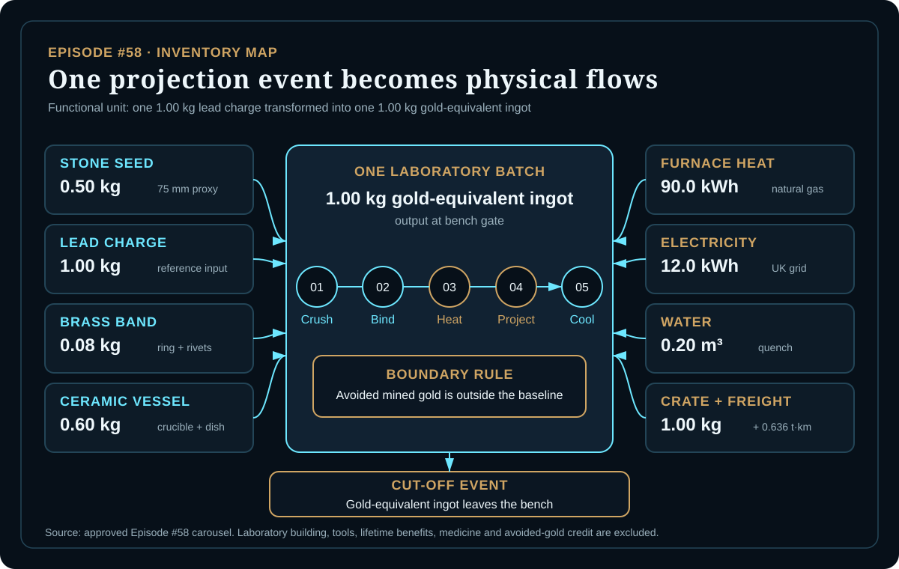
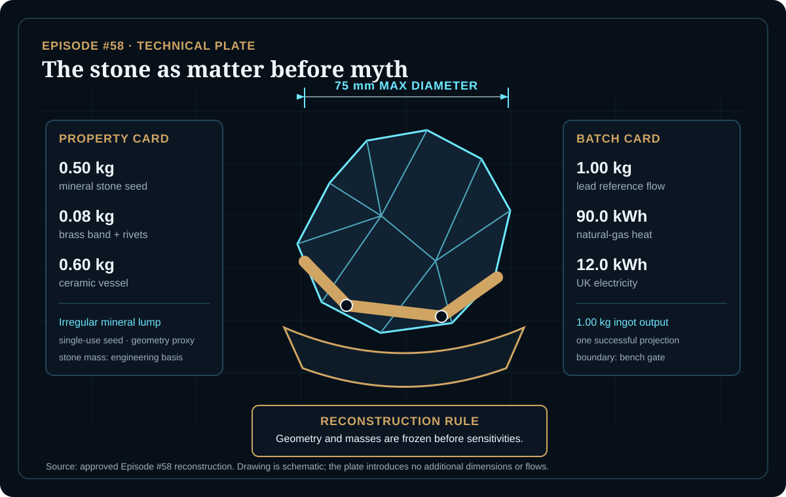
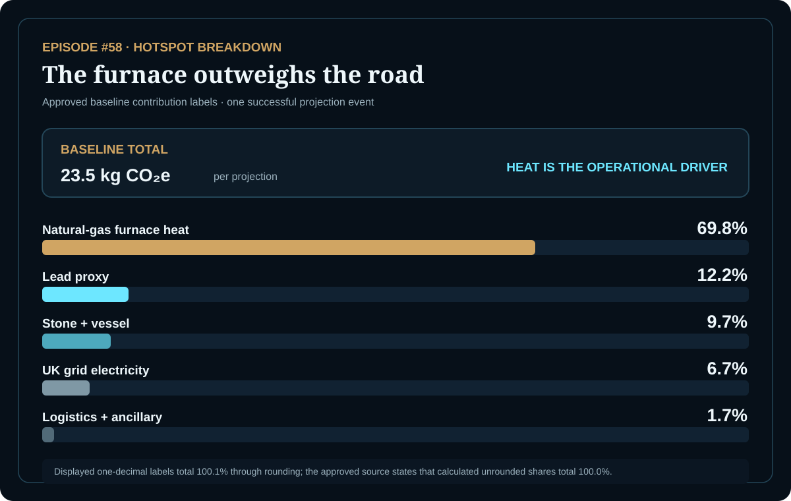

EPISODE #58 · MYTHS & LEGENDS
The Philosopher's Stone
What happens when a miracle enters the inventory, but the boundary decides the sign?
THE SUBJECT
The service is supernatural; the reference flow is not.
The approved episode models one successful laboratory projection event: 1.00 kg of lead enters a European alchemical laboratory and one 1.00 kg gold-equivalent ingot leaves at the bench gate. The stone is reconstructed as a single-use, palm-sized mineral seed rather than an unquantified magical energy source.
The physical model freezes a 0.50 kg stone with a 75 mm maximum diameter, a 0.08 kg brass retaining band and a 0.60 kg ceramic crucible and dish. Furnace heat, UK electricity, water, packaging and inbound freight remain visible; laboratory buildings, tools, lifetime alchemy benefits, medicine and any avoided mined-gold credit remain outside the baseline.
Projection event
One laboratory batch transforms 1.00 kg lead into a 1.00 kg gold-equivalent ingot.
Stone seed
The physical proxy is a 0.50 kg irregular mineral lump with a 75 mm maximum diameter.
Main hotspot
Natural-gas furnace heat contributes 69.8% of the approved baseline footprint.
Boundary lock
Avoided mined gold is tested separately and is not embedded in the 23.5 kg CO₂e baseline.
VISUAL MODEL
A miracle becomes a batch model
The inventory map separates physical inputs from the supernatural step; the technical plate freezes geometry, mass and batch parameters before calculation.


DETAILED LIFE CYCLE INVENTORY
Wonder gets weighed
The grouped climate contributions reconcile to the approved 23.5 kg CO₂e baseline. Values are shown at the precision supported by the source; no unreported crate or water factor is invented.
| Stage | Component / activity | Activity data | Climate change | Modelling basis |
|---|---|---|---|---|
| Projection materials | Red mineral stone + ceramic vessel + brass retaining band | 0.50 kg stone + 0.60 kg ceramic + 0.08 kg brass | ≈2.27 kg CO₂e | Published 9.7% stone-and-vessel grouping. F1 glass proxy: 1.403 kg CO₂e/kg for stone and ceramic; F3 metal proxy: 9.114 kg CO₂e/kg for brass. |
| Projection materials | Lead feedstock | 1.00 kg | ≈2.86 kg CO₂e | Published 12.2% contribution. F2 steel proxy: 2.862 kg CO₂e/kg. |
| Furnace operation | Natural-gas-equivalent heat | 90.0 kWh | ≈16.4 kg CO₂e | Published 69.8% contribution. F5 DEFRA 2026 factor: 0.182 kg CO₂e/kWh. |
| Ancillary operation | UK grid electricity | 12.0 kWh | ≈1.57 kg CO₂e | Published 6.7% contribution. F6 DEFRA 2026 factor: 0.131 kg CO₂e/kWh. |
| Ancillary & logistics | Wood crate, water supply/treatment and inbound road freight | 1.00 kg crate + 0.20 m³ water + 0.636 t·km | ≈0.40 kg CO₂e | Published 1.7% grouped contribution after calculation. F9 road-freight factor: 0.104 kg CO₂e/t·km; the source factor page does not separately reproduce the crate and water factors. |
Included
Mineral-stone proxy, lead feedstock, brass band, ceramic vessel, furnace heat, electricity, water, packaging and inbound freight.
Excluded
Alchemy lifetime benefit, laboratory building and tools, avoided mined-gold credit, and use of the stone as an elixir or medicine.
Cut-off event
The boundary ends when the gold-equivalent ingot leaves the bench. The source characterizes the study as a narrative reconstruction, not a verified LCA.
Factor rule
DEFRA 2026 is used where a representative factor exists. Glass, steel and metal substitutions remain explicitly labelled as proxies.
HOTSPOT
The furnace outweighs the road
The source states that unrounded shares total 100.0%; the five displayed one-decimal labels sum to 100.1% because of rounding.

Main result
23.5 kg CO₂e
Per successful projection event at bench gate.
Furnace heat
69.8%
The practical baseline hotspot.
Lead proxy
12.2%
The second-largest published contribution.
Logistics + ancillary
1.7%
Freight remains visible but minor.
Furnace heat sensitivity
60 kWh → 18.1 kg CO₂e
90 kWh → 23.5 kg CO₂e
140 kWh → 32.6 kg CO₂e
Only furnace heat changes; materials, freight and electricity remain fixed.
Thermal interpretation
The approved range spans about 14.6 kg CO₂e from low hold to long hold. Heat demand changes the magnitude without changing the baseline hotspot story.
Avoided-gold accounting views
No credit → 23.5 kg CO₂e
Mine S1+S2 credit → -25.4 t CO₂e
Supply-chain credit → -32.7 t CO₂e
The credit cases are separate accounting views, not alternative baselines.
Interpretation lock
Including avoided gold production changes the sign and dominates every physical flow. The boundary decision therefore overwhelms material, freight and energy refinements and must remain an explicit disclosure.
THE VERDICT
The footprint is small only while the gold credit stays outside the baseline.
Furnace heat is the practical hotspot.
Lead and material proxies matter, but they do not reverse the result.
Avoided mined gold is a disclosure issue, not a decorative footnote.
The stone is impossible; the boundary choice is real.